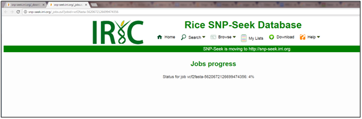

A. Given a region of interest (gene), get similar varieties
Region of interest: LOC_Os04g57530


B. Finding varieties from the 3K panel that is similar to a particular variety.
Trait: 100-grain weight.


Region of interest: Pstol1 gene (chromosome 12, 15.46 mbps to 15.62 mbps) in the Kasalath genome.

After inputting these information and reference genome setting, the query will return a link that enables downloading of a CSV formatted file SNP x 3k RG accession matrix. Inspecting this downloaded SNP matrix, there were 1,125 SNP positions discovered within this region, while no SNPs (blanks) were seen using Nipponbare genome, as expected. Without the Kasalath reference information, variant discovery would be impossible using the Nipponbare reference genome. These SNP positions can now be further examined and surrounding sequences extracted for Pstol1 marker assay design.

2. Go to Sequence tab.
3. Supply the Reference genome, Locus ID in the Locus drop down menu. By choosing the locus ID from the dropdown menu, the other information will be provided (chromosome/contig, start bp, end bp). Then choose all for Variety List dropdown menu, or the list of previously created Variety List. Then click the Download Sequence button to start downloading.

4. The download will run in the background. The site will provide a url where the download progress can be monitored.
5. The progress can be seen in another window. Refreshing the page will update the progress.

6. Once the job is 100%, the sequence s can now be downloaded to the local work station.
Created with the Personal Edition of HelpNDoc: Single source CHM, PDF, DOC and HTML Help creation